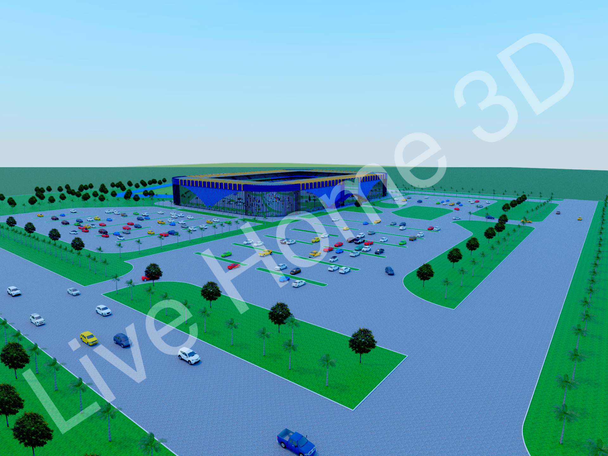
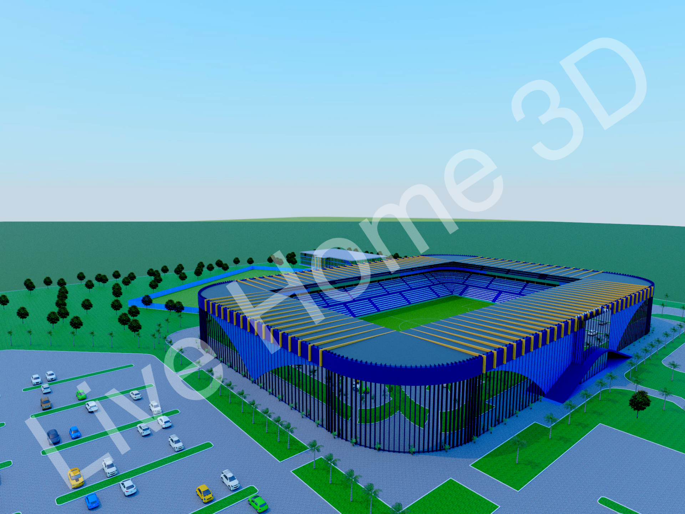
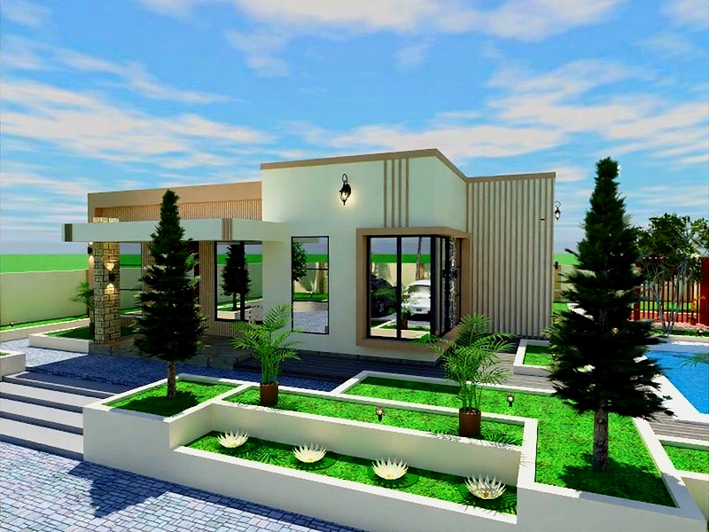
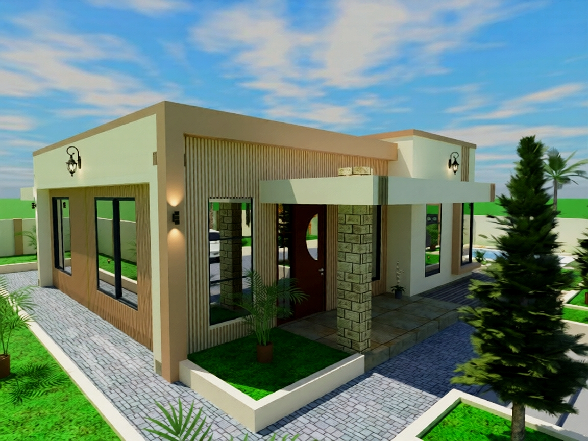

FOOTBALL STADIUM DESIGN
Large-scale football stadium incorporating spectator stands, pitch layout, access circulation, landscape buffer zones and ancillary public facilities. Designed entirely in Live Home 3D with full site planning.

STADIUM — AERIAL VIEW
Aerial perspective showing full site layout, parking, access roads and surrounding landscape buffer zones.

STADIUM — FRONT ELEVATION
Front facade render showing main entrance, facade design and pedestrian approach landscaping.

ISLAMIC CENTER
Complete Islamic center design including mosque, madrasas and surrounding landscape. Features blue domes, minarets, arched colonnades and structured courtyard planning for community worship and education.

MOSQUE — CLOSE UP
Detailed mosque render showing dome, minarets, arched entrance and courtyard landscape.

LUXURIOUS BUNGALOW
Luxury residential bungalow for the Makongo area. Tropical landscape, pool integration and sustainable outdoor living spaces.

BUNGALOW — GARDEN VIEW
Garden and pool area render showing tropical landscaping, outdoor deck and boundary treatment.

BUNGALOW — REAR ELEVATION
Rear garden view showing architectural detailing, windows and integrated outdoor garden design.

SS CENTRE — COMMERCIAL COMPLEX
Urban landscape design for a large commercial complex. Outdoor seating areas, stone paving, palm-lined entrances, green buffer zones and pedestrian circulation integrated with the glass facade building.

LUXURIOUS HOTEL DESIGN
Multi-storey luxury hotel with comprehensive site landscape design. Features pool, parking with tensile canopy structures, tropical planting and curved road access all integrated with a high-rise glass tower.

TRAVEX MALL
Africa's intelligent digital marketplace. Multi-tier seller dashboards (Basic & Premium), campus market flows, PWA support, full authentication and AI-powered features. Core product of Travex Digital Group.

TRAVEX SOCIAL VYBE
Tanzania's first business social network — inside Travex Mall. Post products, grow your brand and connect directly with buyers.

TRAVEX FINANCE
Financial management SaaS for Tanzanian retail businesses. Record sales, manage stock, track debts — all in one Kiswahili-first interface.
ECONOMIC FOOTPRINT VERIFICATION SYSTEM
Cross-sector tax intelligence system for the Tanzania Revenue Authority. Cross-references taxpayer declarations against TANESCO, DAWASCO, mobile money (M-Pesa/Airtel), NSSF and TANCIS data to detect revenue leakage at scale.
Author of digital magazines spanning architecture, lifestyle, sports, digital and tech. Each magazine is researched, written, designed and edited by Jumanne Maregeri — covering East Africa's most important stories.

ECONOSPORTS
Sports Business Magazine — African Clubs Rising. January 2026.

THE GREEN SHIFT
Landscape Architecture & Climate Crisis. July 2025. Founder & Editor.

THE GREEN LEGACY
Young Africans SC — Business, Power & Future. December 2025.

NIFFER LUXE
Beauty. Fashion. Scent. Identity. Lifestyle Edition — May 2026.